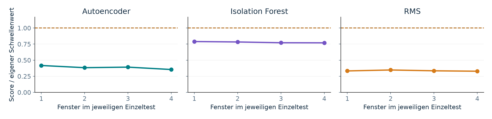

| METHODE | FENSTER | UNGÜLTIG | ALARME | ANRUFE* |
|---|---|---|---|---|
| ● Autoencoder | 4 | 0 | 0 | 0 |
| ● Isolation Forest | 4 | 0 | 0 | 0 |
| ● RMS | 4 | 0 | 0 | 0 |
Jeweils 3 s angefordert; unabhängige kurze Aufnahmen. * Keine Anrufaufforderung protokolliert. Keine Störungsversuche in dieser Datengrundlage.
Die drei Einzelprozesse können Sensordaten aufzeichnen, Scores berechnen und Entscheidungen speichern.
Keine Rangfolge der FehlererkennungPhysischer Vibrationsbeginn, endgültiger Handyaufbau und dessen Kalibrierung sind noch offen.

Gestrichelt: eigener Schwellenwert. Score/Schwelle ist keine Wahrscheinlichkeit und macht unterschiedliche Scores nicht zu gleicher Empfindlichkeit.